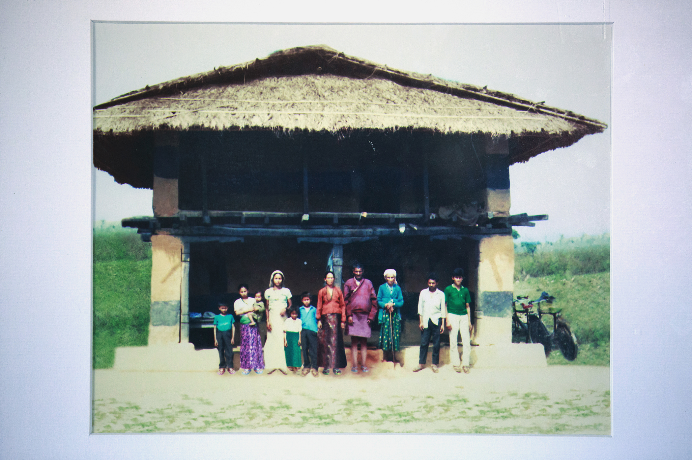

WHEN AMERICAN AIRLINES flight 1804 circled Seattle approaching Sea-Tac Airport, Birkha Biswa stared at a sea of green trees, skyscrapers and dense neighborhoods below. Birkha, 33, was amazed at the number of planes and cement highways spanning the perimeter of the airport, as well as the diversity of faces bustling through the bright corridors of the airport.
